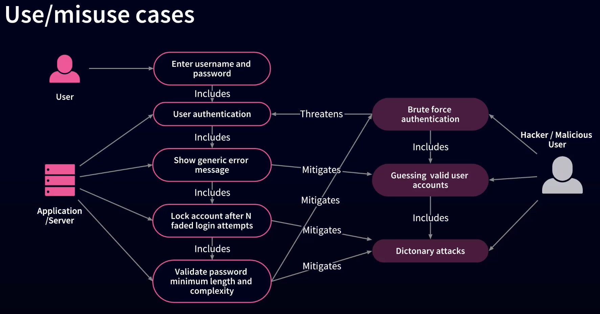
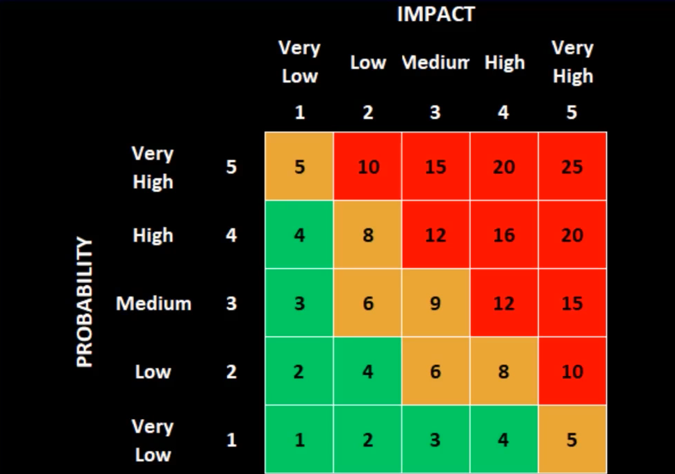

Risk Management is one of the important topics in information security. It helps to make good
business decisions that support security function and also ensuring that we delivered value to the
business.
The First part explains about the Risk Management and Security overview, follwed by Risk and four
phases of Risk Management Life Cycle (Risk Identification, Risk Assessment, Risk Mitigation, Risk
Monitoring). Next part explains about how Risk Management helps us to identify information security
priorities follwed by Audits, Vulnerability assessments and penetration tests.
Information Security
When we think about information security a lot of things comes into mind, but the main purpose is to
provide security for organizational assets, commiserate to the value of assets, threats and
vulnerabilities.
If you ever heard a statement - "You can never have too much security" is wrong, you can definitely have
too much security and it needs to be appropriate the assets that you are protecting should be reduced to
level which is acceptable to senior leadership.
For example, you need not to install a retina scan system to protect your house because that is too
expensive
and not commiserate with the assets that you need to protect. But if you are protecting a top secrect
government
information, a retina scan might be necessary and sensable.
- Assets: Something we value - doesn't have to be tangible.
- It might be a big TV screem which is tangible or a company's
reputation which is intangible. You always starts with assets, figure what are worth and
what are not and then look into threats.
- Threats: Something which could pose harm to the asset.
- A threat is only possible if there is a weakness. Other word for
weakness is Vulnerability.
- Vulnerability: A weakness or lack of protection of the asset
- Control: Implemented to mitigate risk
- When looking to implement a security control, i need to think
about the value of the assets that i'm protecting, as well as the threats and
vulnerabilities. Otherwise, i may spend too much on security or i may not spend enough.
So, we just need enough security based on the risk management.
- Residual risk: is the amount of risk leftover after implementing a
control.
- Eventough, after implementing controls to mitigate risk, it
doesn't eliminate all the risk and the amount of risk that leftover is called Residual Risk.
For example, there is a malicious activity from outside of network impacting internal
resources, and i might configure a firewall. That will keep the malicious actors off on
internal network. But that doesn't eliminate any conceivable possibility of something
affeting the internal network. But it brings down the total risk to a much smaller, and what
leftover is called Residual.
From the Residual, i determine whether it is acceptable or
not. Sometimes the amount of the risk that is leftover is acceptable.
Our job with Risk Management is to reduce the risk to a degree that is acceptable to senior management.
Then ofcourse, you need to monitor and maintain that risk to make sure it continues to stay at that
acceptable level.
That's what Risk Management and information security is all about.
Risk = Asset * Threat * Vulnerability
Risk Management Life Cycle
There are 4 steps in risk management life cycle
- Identity Risks: Determine where threat meets a vulnerability
- Assess Risks: Determine a Qualitative or Quantitative analysis for Risk:
Probability * Impact
- We use Qualitative or Quantitative analysis to determine what potential
is for loss. In order to do that, we need to look at the Probability of the risk event and
multiply that times its Impact. This gives us the value of the risk, so we can prioritize it.
- Mitigate Risk: Reduce, Transfer, Accept
- The value of the risk that we accessed in the Step 2 will drive our mitigation
strategy. If it has a high probability and high impact risk then we will have a very high active
strategy. If it has a low probability and low impact risk then probably will have a passive strategy.
Our options for mitigating risks are by reducing, transferring or acceptin risk.
- Monitor Risks: We can't eliminate risks, so we must continue to monitor.
If someone asks that if you are done with the risk management, the answer is never because you have to continue
to monitor risks.
Step 1: Risk Identification
There are three parts to Risk Identification
- Identity Assets
- As explained earlier, assets means data. We need to identify the data that
we need to protect and the value of the data.
- Identity Threats
- After identifying assets, you need to ask what are the threats? - Threats are
those that can exploit weaknessess or vulnerabilities. So you have to identify the vulnerabilities.
- Identify Vulenrabilities
- Threate Modeling - Use and Misuse Cases, STRIDE
- One of the ways to identify risks is to use threat modeling. Along with
STRIDE and Use Misuse Cases we can also include risk scenarios to the threat modeling.
STRIDE
| Threat |
Mitigation |
| Spoofing |
Authentication |
| Tampering |
Integrity Verification (Message Digests/CRCs) |
| Repudiation |
Non-Repudiation (Digital Signatures, Keys) |
| Information Disclosure |
Confidentiality Through Encryption |
| Denail of Service |
High Availability / Redundancy / Fault Tolerance |
| Escalation of Privilege |
Authorization |
The STRIDE Thread model is a very common model that is used with software development. It includes 6 primary
security threats and the mitigation strategies for each of those threats.
The letter S stands for Spoofing and it means impersonation. For example,
IP adress spoofing, caller ID spoofing, MAC address spoofing or email spoofing. The best way to mitigate
spoofing is through strong authentication, which is proving your identity.
Usually, it is suggested
to use Multiple Factors of Authentication (MFAs), this typically includes asking for 'Someting you know',
'Something you have' and 'Something you are'. Recently, 'Somewhere you are' is added to the list using GPS,
also added 'Something you do' like patterns that you swipe on your smartphone and so forth.
The letter T stands for Tampering and it involves modification of original data. The best way
to mitigate aganist this threat is to reform the integrity verification such as message digests, another
word for messgae digest is hash. Other migitation strategies are CRCs (Cyclic Redundancy Checks) and checksums.
The letter R stands for Repudiation which means that a sender of an email disputes that they sent
the message or they could say that they sent the message, but it was tampered within transit. The mitigation
strategy is non-repudiation means using something that provides authenticity and integrity such as a digital
signature and keys.
The letter I stands for Information Disclosure means disclosure of sensitive information. The
mitigation strategy is Confidentiality and Encryption.
The letter D stands for Denial of Service, are the attacks about rendering a service or server
unavailable. This might be where you flood a server with illegitimate reasons so that it is so busy dealing
with those requests and it can't handle legitimate requests. Another example is where an attacker uses
unsuspecting networks that we refer to as botnets or zombies to launch a much larger attack on the target. The
mitigation strategy is high availability, redundancy and fault tolerance. So if web server 1 is attacked there
will be web server 2 can handle the remaining traffic.
The letter E stands for Escalation of privilege, means an attacker accesses a system as a regular
user and escalates his privileges, that way he has an administrator account and gave more permissions. The
mitigation strategy is to have strong authorization measures.
Use and Misuse Cases

The above image is an example for Use and Misuse Cases. In this case, the user goal is to ultimately going to try
to access the application server.
So as a first step, they are going to enter thier username and password which servers as authentication. With the
first step what are the threats here?
The big threat here is the
brute force authentication attempt,
guessing password attack and could try
dictionary attacks. Dictionary attacks have become
much more sophistiacted over the years, since so many users include special characters and passwords.
There are different options available to mitigate this attack. One way is to show a generic error message when
the hacker gets password wrong. We don't provide a specific error message about what went wrong in the failed
attempt. Another thing is to do lock an account after a certain number of failed attempts. That will prevent an
automated program from being able to keep running and trying different combinations.
Another way to mitigate these kind of threats is to require users to have passwords that have a minimum length
and a certian amount of complexity. Compelxity does not always equal security. It is recommended to users to have
longer passwords rather than more complex ones.
This is one of the examples for Use and Misuse Cases used in threat modeling. One more such case to take is of an
individual trying to access a file. You would consider the threats and vulnerabilities and how they could be
exploited. Then you would consider the mitigation strategies.
Risk Scenarios
Risk Scenarios is where you simply list your assets, then list all the things that could threaten those assets.
Then you could list the vulnerabilities.
The most important thing in all the scenarios of threat modeling is to consistently document your risks, so you
can figure out how to mitigate them.
Risk Assessment
After Identifying risks, a lot of times this will go in a document called risk register.
A risk register which gives you a way to keep track of your risks, and once you've identified and documented the
risks, the next step is to figure out a value for the risk.
Value means the potential for loss. Does the risk have a high potential to cost us a lot of money or could it cause
a lot of damage to data that is compromised?
Now, we need to know how to prioritize the risks. To do that we have 2 types of assessments.
Qualitative Assessment: It is easy to do. It is based on gut and instinct
and subjective. It doesn't involve research or gathering data, but it relies on having expetise to make this
assessment. It can be inexpensive and quick way to begin the prioritization process.
We use terms like high, medium or low to describe the probability and impact of the risk.
Probability is how likely the risk event is to happen and impact is the severity of the damage or loss.

The above image describes the probability and impact matrix which is like a heat map showing that the events in
green are low enough probability and impact that we can live with
them. The yellow ones are ones that we're concered about and the
Red ones we need a very active mitigation strategy and we should get it implemented very quickly.
Based on this type of Qualitative assessment, you know which types of risks you need to address first. But if you
really want to make a business decision about how much money to spend to mitigate a risk, you wouldn't rely on a
Qualitative assessment.
Qualitative Assessment is used to figure out what to focus on first but to determine the dollar amount to spend we
use Quantitative analysis. But you don't get a dollor value for a potential for a loss. Sometimes, potential for a
loss is hard to measure in dollars. Things like loss of company reputation, customer confidence, or employee
satisfaction are all hard to quantify.
Quantitative Assessment: It allows you to think about the cost of the loss,
figure out the cost of a countermeasure and make a good decision on cost-benefit analysis.
For Quantitative analysis, you gain more expertise and you have to do a little math. There are few formulas and
terms to remember:
Terms
- Assest Value (AV): Dollar figure that represents what the assest is worth to
the organization.
- Exposure Factor (EF): The percentage of loss that is expected to result in the
manifestation of a particular riks event.
- Single loss Expectancy (SLE): Dollar figure that represents the costs of a single
occurence of a threat instance.
- Annual rate of Ocuurance (ARO): How often the threat is expected to materialize.
- Annual loss Expectancy (ALE): Cost per year as a result of the threat.
- Total cost of Ownership (TCO): is a total cost of implementing a safeguard.
Often in addition to initial costs, there are ongoing maintenance fees as well.
- Return on Investment (ROI): Amount of money saved by implementaion of a safegaurd.
Sometimes reffered to as the vaue of the safegaurd/control.
Formulae
- SLE = AV * EF
- ALE = SLE * ARO
- TPO = Initial cost of control + Yearly fees
- ROI = Return on Investment:
- ALE (before implementing control)
- -ALE (After implementing control)
- -cost of control
- ---------------------------
- =ROI (Value of Control)
Risk Mitigation
By this point, we've identified and assessed the risks, and have a value for them. Now, we've to figure out the
best way to mitigate them.
Risk Reduction
Risk reduction means that action is taken to lessen the frequency and/or impact of a risk.
May require the use of several controls until it reaches levels of risk acceptance or
risk tolerance.
Examples of risk mitigation
Strengthening overall risk management practices, such as implementing sufficently
mature risk management process.
Depluying new techincal, management or operational controls that reduce either the
likelihood or the impact of an adverse event.
Installing a new access control system.
Implementing policies or operational procedures.
Developing an effective incident response and business continuity plan (bcp).
Using Compensating Controls.
**The ultimate risk reduction is avoidance.
Risk transference
Another option to mitigate risk is Risk transference.
Risk Transference is a decision to reduce loss through sharing that risk with another organization.
For example, I worried about being ab;r to provide availability that's necessary to satisfy my customers. So i
outsource, and i have my infrastructure migrated to cloud, and take advantage of the uptime that's promised by the
Amazon. If Amazon web services doesn't it provide the degree of resources necessary to get the high availability
that i want, then there's a reimbursement based on the Service Level Agreement (SLA).
So, if there is a loss, they will always share in the loss with me.
With Risk Transference we are trying to share the loss potential do that it doesn't weigh us down.
Remember: You can't transfer liability.
Risk Acceptance
Risk Acceptance comes with either there's nothing we can do about a risk, or if we determine that it's too
expensive to mitigate a risk.
Examples of Risk Acceptance
Provide no active mitigation.
Based on a cost/benefit analysis, it is determined the cost of the control is less than
the potential for loss.
Sometimes acceptance is the only choice.
Risk acceptance still includes due diligence, and can still be used to indicate good
business decisions were made.
Level of risk and impact is always changing, so regular reviews are needed.
Information Security Controls
When we talk about mitigation strategies, and risk reduction, we have to remember the idea of layered defense. With
layered defense we want technical, physical and administrative controls if possible.
Technical Controls (Logical): includes Encryption, Firewalls, Intrusion Detection/
Prevention Systems (IDS/IPS) etc.
Physical Controls: includes things like door locks, security gaurds, mantraps etc.
Administrative Controls: includes policies, procedures, standards and guidelines.
Those are the things comes down from senior leadership as directives and influence security, So all these 3 types of
controls make up a good layered defense.
Layered Defense
Within each of those categories of controls, we also have that serves specific functions.
So within Physical, Administrative and Technical controls we can have Preventive, Deterrnet, Corrective and
Detective controls.
Detective Controls: For detective controls in the physical category, you have things like
motion detectors, building alarms and etc.
Preventative Controls: For preventative controls under the administrative category, you
could have the seperation of duties policy.
Deterrent Controls: An example of Deterrent administrative control would be an employee
handbook that tells you what you can and cannot do.
Corrective Controls: A Corrective administrative control could be a terminiation procedure.
Each of these major categories of controls have these additional types of controls that serve specific functions, this
is all part of layered defense. You don't have to rely too heavily on one type of control or another because any
control can be bypassed.
Risk Monitoring
Risk Monitoring is all about the fact that no matter how much you put into planning, risks still materialize. We
need to continue to evaluate and watch for risk in a number of ways.
Key Risk Indicators (Triggers)
The First way is to look for care eyes which is key risk indicators, also known as
triggers. Triggers indicate that the risk event is likely to materialize.
For example, if i am concerned
about a denial of service attack and i put my mitigation strategies in place, i'll also monitor the network.
If i see network traffic escalating and network utilization is at 70 percent and going up, then i'll see that
as a key risk indicator. It tells me that regardless of what i've done for mitigation, there's still something
going on. For this type of scenario, i would plan to monitor the network and establish that if network utilization
exceeds 50 percent for more than five minutes consecutively, then that is something i want to be alerted to.
This is what a Key Risk Indicator is, It's an alarm or an early warning system. Care eyes need to be determined
early. These are the things you would add in your risk register. You would add what you are looking for as an
indicator of the risk you are documenting. You want to be as proactive as you can and be preventative. But you
also want an alarm that will tell you when your risk is going to materialize.
Log Reviews
Log reviews are the other ways to monitor the risks. You want to do it proactively.
Often you only look at your logs after an event. But we find that if we've been looking at our logs ahead of
time, we could have seen things that something was happening before an actual event.
Intrusion Detection
The other way to monitor risk is Intrusion detection and protection systems, IDPS. You
should monitor them and be wary of false positives, but also false negatives. We want to make sure our intrusion
detection system are tuned properly.
Honeypots and Honeynets
Another way to monitor risks is to use Honeypots and Honeynets. These are devices that
are decoys. They're set aside to look like a vulnerable system, but instead they contain detective software
that monitors when an attacker does. Their purpose is distraction, but also detection of an attack.
Incident Response
Finally, you want to keep in good communication with your incident response team.
Monitor what they are seeing and use that as an indicator of a risk that might occur.
Security Principles
CIA Traid - Confidentiality, Integrity, Availability
In the Information Security realm, We have to start with the very beginning. We have to look at CIA traid -
Confidentiality, Integrity, Availability. These are the three tenants of security. When we talk about securing
an organization, these are the three services we're focused on.
Now the problem is that security always costs something. There's always a trade-offs or security. Usually that
trade-off is performance. Security usually slows things down. Sometimes it costs money. Sometimes you have to
upgrade components or pay for security devices. But performance is the key trade-off. So, we have to find out is
"what is the right amount of security based on the need for performance?", we also take into consideration of
cost and user acceptance. But we're mainly looking for balance between security and performance.
Confidentiality
Threats aganist Confidentiality
Social Engineering:
The greatest threat to Confidentiality is Social Engineering. Social Engineering is all
about impersonation. Impersonating someone to get access to certain knowledge, system ability in a room and
so-forth.
Phishing: Phishing is a very specific type of Social engineering that is commonly done
through e-mail. The PH in Phishing is a throwback to the fact that is used to be very common on a phone system.
We used to get those calls soliciting donations or other fradulent activities. Now e-mail is the main market
for this.
Phishing is based on the idea that it's indiscriminate. An attacker sends an massive e-mail
going back. An attack sends a massive alien and casts a large enough net that he catches something. A spammer
purchases a mailing list and sends the message out to everyone.
Spear Phishing: Spear phishing is a type of Phishing. This means it's targeted. The
attacker's targeting a demographic group or a specific organization and hopes that he is more likely to be
successful.
Whaling: A specific type of spear phishing is called whaling. This is when the spear
phishing is focused on in snoring senior leaders. Now, senior leaders sometimes insist on having access to
everything but sometimes they don't have time to get the security training that everyone else gets, and you'd
think they would be the most focused on avoiding risk. This might be why whaling to tax are successful.
Vishing: This is an another type of phising. The idea here is that the attacker exploits
voice over IP systems. With caller ID, you would think that you can detect this type of attack. But phone
numbers are as easy to spoof as anything else. That is not always a perfect way to detect these types of
attacks.
Media Reuse: Another threat to Confidentiality is media reuse. This is where we stored
information on removable drive, like a thumb drive or a removable hard drive, or maybe people are sharing
a laptop or some other device. If that hardware or media is not properly sanitized, we might be inadvertently
passing information from one individual to another.
Sanitizing media is really critical. One of the ways
to do this is Zeroisation, where we override the drive with zeros. It's fine and loose security environments.
But one thing about Zeroisation is that it's not good enough for really sensitive information. For that, the
best thing is physical destruction. That's the only way to make sure the data remnants are gone. Because if
the attacker has the right equipment, he can still retrieve data from a disk that's been Zeroised.
Another point, if you are storing sensitive information in the cloud, you can't do any physical sanitization.
For that there is something called Crypto Shutting. This involves encrypting entire disk with a really strong
publicly known algorithm. One of the things you'll find is that people in the security propor is open as
opposed to close architecture. Ideally, the algorithm is one that's tried and true and has been around for a
long time. When we use this algorithm we destroy the key. We would never keep the key on the same volume that
we keep the encrypted information. That's how we destroy remnants in a cloud environment.
Evaesdropping: Evaesdropping is the next threat to Confidentiality. Here we don't mean
people listening on phone conversations. We mean techincal evaesdropping. This means sniffers like Wireshark.
Another name for sniffer is a protocol analyzer. May hear it called a network or a packet analyzer. But the
idea is that an attacker has a device on the network that captures traffic in a software that allows the
attacker to view the traffic. The easy way to defend aganist evaesdropping is encrypting your data. Also,
you can keep a really sensitive stuff from traversing the network at all.
We want to make sure that we're aware of these threats, and we also want to have a good idea of how to mitigate
aganist them. With social engineering, the best method is through training. Another way is to use separation of
duties because a person can't give an attacker information if they don't have it. For media reuse, we make sure
we sanitize the media and for evaesdropping, we encrypt our data.
Integrity
Threats aganist Integrity
When we talk about threats to integrity, we are concerned about whether a data has been modified. There are couple
ways that can happen.
One way is through corruption, which is accidental or unintentional modification.
Maybe it happens because there is interference on the line or something happens as data traverses great lenghts.
Another way is through malicious modification, that's intentional. For example, an attacker
inserts malware into a file that gets downloaded, or somebody captures a package in transit, and makes
modification to it. or may be they alter communication and change a session header or a source ID.
All of that is a threat aganist Integrity.
Integrity Controls
Corruption is easier to detect than malicious modification. When we're just looking to protect aganist corruption,
we use hashes or hashing. Another word for hash is a message digest, and another word is a checksum.
With malicious modification, we have to be more robust with our security controls. Because if an attacker can
modify the data, they may be able to modify the security controls. For this we have a MAC or a Message
Authentication Code, or a digital signature.
If we want to protect the integrity of log files and audit records, we can use write-once media to make sure they
can't be modified. Baselineimages can be put on write-once media also, and hashes can be used with images as well.
Availability
Threats aganist Availability
The most common attack aganist availability is a denial of service attack. A denail of service or DoS attack has
to do with overwhelming the servers that it is so busy responding to illegitimate requests that it can't respond
to a legitimate request. It could also be someone on party server in the server room, but the one's we are going
to look at have to do with the resource overload.
Now, if a single system can cause a resource overload, what about if an attacker took over 10 or 100 or 10,000
systems? That's what happened in a distributed denial of service or DDoS attack. The attacker gets malicious
software on the systems without zombies or botnets which launch downstream attacks, lots of attacks looks like that.
Another type of issue with availability is just failure.
Failure of devices or resources. It can be caused by natural disaster like a fire or a hurricane that causes
power outages or even something like an employee strike can effect availability.
They can also can have something klike a ransomeware attack, which means your data is not available.
There are all sorts of ways that availability can suffer.
Availability Controls
The answer to keeping availability alive is redundancy. Along with that, go with ideas of resiliency and fault
tolerance. The idea there is to withstand an attacker and keep going on even if you have been attacked. We also
list backups here, but when you think about availability, you have to be really comprehensive, and backups only
work for data.
Key points in Security Principles
For all the security principles in the CIA traid, we have the remember some security concepts.
Security through Obsurity is not security.
There's two schools of thought with software security. There's open code, so that folks can look at the code and
recommend changes. For example, TCP/IP is an open protocol, Unix and Linux are open operating systems, or the
alternative is to have closed and proprietary code like Microsoft. The thought with closed code, if you can't see
it, you can't break it. But that is security through obsurity, and it doesn't work. We prefer openness.
Another idea is Security by Design. We design a product to be secure. Instead of coming
along later, and realizing that something is not secure. We start by thinking about security from the very
beginning in the design of our products. We haven't always done this. For example, IP, HTTP, FTP these are
all protocols that are not secure. They had to be made secure later, after they were designed.
Layered Defense is a security concept. Here, we make an attacker go through a series of
controls and you make those controls different. If you think about physical security, you don't have multiple
fences. Instead you have fences, but also security guards, swipe card access, biometric scans etc. You can
apply the same principle for securing our data and our systems.